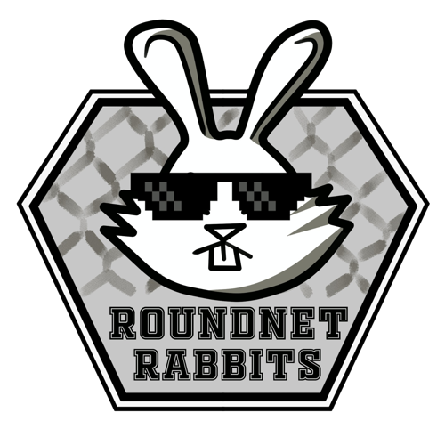
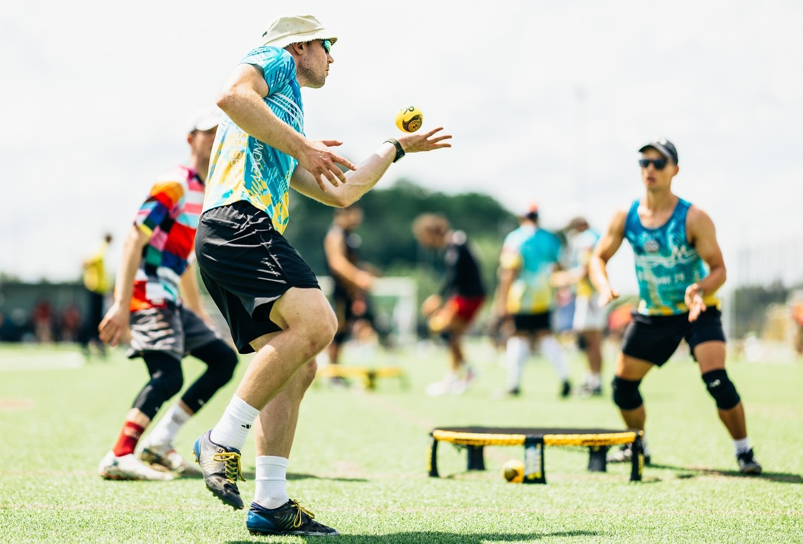
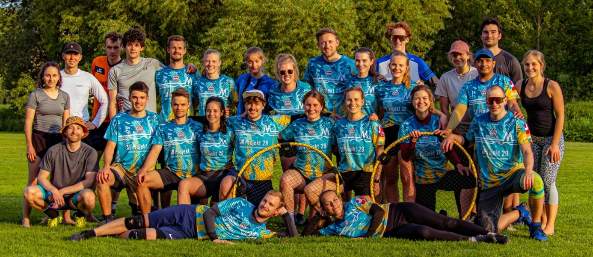
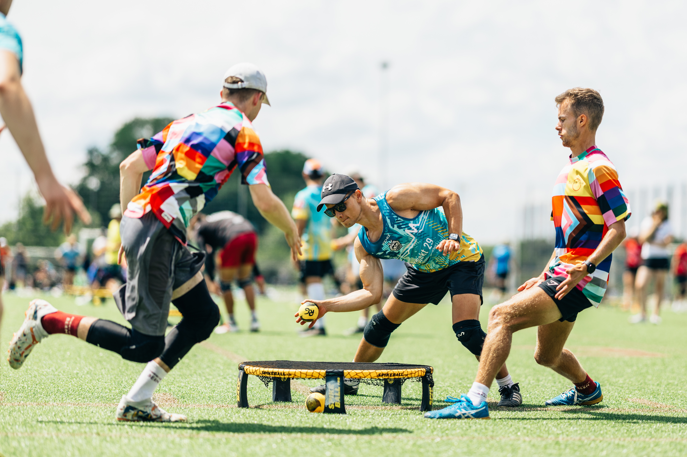

Willkommen bei den
Roundnet Rabbits Regensburg

ROUNDNET RABBITS
Let's play the Game
Training
Wir trainieren sowohl im Sommer als auch im Winter zwei- bis dreimal pro Woche. Im Sommer trainieren wir draußen, meistens auf Naturrasen, manchmal auch auf Kunstrasen. Im Winter wechseln wir in die Halle. Das Training unterteilt sich jeweils in Wettkampftraining für Spieler*innen ab der Niveaustufe intermediate/advanced und Vereinstraining für Anfänger*innen und Freizeitspieler*innen. Beide Einheiten werden jeweils von einem Trainer geleitet. Damit der Spaß nicht zu kurz kommt, wird immer darauf geachtet, dass genügend Zeit für freies Spiel bleibt. Wenn du die Regeln noch nicht kennst, ist das auch kein Problem. Wir helfen dir gerne weiter. Das folgende Video macht dich im Handumdrehen mit allem Wichtigen vertraut.
Besonders Interessierte finden das ausführliche Regelwerk
hier.
Was brauchst du um mitzumachen? Zunächst einmal nicht viel. Sportschuhe einpacken und los
geht's! Bedenke bitte, dass im Hallentraining natürlich Hallenschuhe notwendig sind.
Wann und wo wird trainiert? Unsere aktuellen Trainingszeiten findest du auf unserer Instagramseite oder kontaktiere uns einfach!
Liga
Die Roundnet Rabbits sind bereits seit der ersten Stunde in der deutschen Roundnet Liga vertreten. Dabei haben wir bereits Teams in der Regionalliga, in der 2. und in der 1. Bundesliga gestellt. Die Ligasaison ist stets in den Wintermonaten und wird somit ausschließlich in der Halle gespielt. Jährlich stellen die Rabbits zwei bis drei Teams, bestehend aus jeweils mindestens sechs Spieler*innen auf. Mehr Infos zur deutschen Roundnetliga findest du hier.

Tournaments
Das ganze Jahr über werden in ganz Deutschland verschiedenste Turniere in
allen Kategorien und für alle Spielniveaus angeboten. Auch wir haben schon
einige Turniere in Regensburg veranstaltet.
Wenn du Interesse an der Teilnahme an einem Turnier hast oder unsicher
bist, für welches Spielniveau du dich anmelden solltest, sprich uns sehr
gerne im Training an, wir haben viele Spieler*innen mit jahrelanger .
Wann und wo das nächste Turnier in unserer Nähe stattfindet, erfährt man
immer hier.
ROUNDNET RABBITS
Werde auch du Teil unserer Community!

Neugierig geworden?
Egal ob du den sportlichen Wettkampf suchst oder einfach nur zum Spaß spielst – Roundnet
bietet Freude für alle!
Komm doch gern zu einem Schnuppertraining vorbei. Wann und wo
das möglich ist erfährst du auf unserer Instagramseite oder du kontaktierst uns einfach!
Wir freuen uns auf dich!

Kontakt
Wenn du Fragen hast oder mehr über Roundnet und unsere Community erfahren möchtest, kannst du uns jederzeit eine E-Mail an regensburgrabbits@gmail.com schicken oder finde hier weitere Kontaktmöglichkeiten: Linktree.